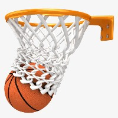
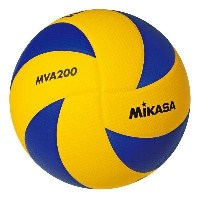

Футбол
Тут будуть розміщуватися усі футбольні новини шкільної спартакіади

Баскетбол
Тут будуть розміщуватися усі баскетбольні новини шкільної спартакіади

Волейбол
Тут будуть розміщуватися усі волейбольні новини шкільної спартакіади
І. Загальні положення
1.Положення про районну спартакіаду школярів серед команд закладів загальної середньої освіти розроблено відповідно до Законів України «Про загальну середню освіту», «Про фізичну культуру і спорт», наказу Міністерства України у справах сім’ї, молоді та спорту від 06 серпня 2010 р. № 2659 «Про затвердження Вимог до змісту положення про офіційні фізкультурно-оздоровчі заходи або спортивні змагання» (із змінами), зареєстрованого в Міністерстві юстиції України 01 вересня 2010 р. за № 766/18061, Положення про обласну спартакіаду школярів серед команд загальноосвітніх навчальних закладів, затвердженого наказом управління освіти і науки Чернівецької ОДА від 22.08.2013 року №744.
2. Організатором спартакіади є відділ освіти Вижницької ОТГ.
ІІ. Мета і завдання
1. Спартакіада проводиться з метою формування в учнів закладів загальної середньої освіти фізичного та духовного здоров’я, залучення їх до занять фізичною культурою, набуття навичок здорового способу життя.
2. Основними завданнями спартакіади є:
покращення спортивно-масової роботи в закладах загальної середньої освіти;
виявлення кращих команд серед закладів загальної середньої освіти для участі у облсани змаганнях з окремих видів спорту;
формування стійких мотивацій до самостійних занять фізичною культурою і спортом.
ІІІ. Керівництво змаганнями
Керівництво районною спартакіадою школярів серед команд закладів загальної середньої освіти району здійснює відділ освіти Вижницької райдержадміністрації.
Безпосереднє проведення змагань покладається на головні суддівські колегії з видів спорту, відділом освіти.
ІУ.Етапи спартакіади.
І етап – спартакіада в закладах загальної середньої освіти.
Відповідальний за проведення – керівники закладів.
ІІ етап – спартакіада об’єднаних територіальних громад, району
Відповідальний – відділ освіти, об’єднані територіальні громади.
ІІІ етап – змагання між збірними командами об'єднаних територіальних громад та району (районна спартакіада).